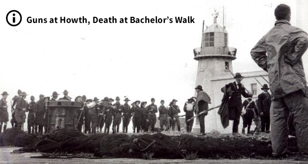
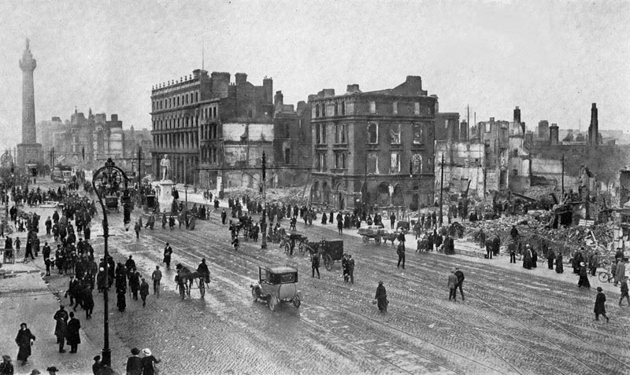
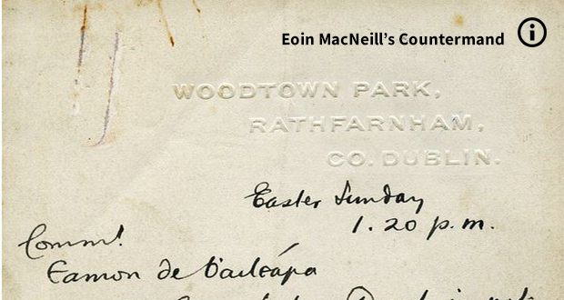

Prelude:
Easter Sunday April 23
Following the successful landing of guns at Howth, and with the distinct possibility of German assistance due to the small matter of the First World War, the Irish Republican Brotherhood, a small, secret, revolutionary body established by James Stephens in 1858, whose sole object was to ‘establish and maintain a free and independent Republican Government in Ireland’, conveened a military council in May 1915 to plan a revolution. The council, lead by the likes of Patrick Pearse, Joseph Plunkett, Eamonn Ceannt, Tom Clarke and Sean MacDiarmada, decided on a joint insurrection with the Irish Volunteers and the Irish Citizen Army, led by James Connolly who, along with Thomas MacDonagh, joined the council.
|

Howth & Bachelor's Walk

In the early hours between the 24th and 25th of April 1914, almost 25,000 rifles and somewhere between 3 and 5 million rounds of amunition was successfully landed at Larne, Donaghadee and Bangor, a smuggling operation, although authorities were aware of it but turned a blind eye, to equip the Ulster Volunteer Force, who had been founded in 1912 to block any attempt by the British Government to impose domestic self-government, Home Rule, in Ireland. ******** the Irish Volunteers organised the landing of 900 Mauser rifles at Howth on the 26th of July, 1914. As this took place during the day, it attracted a fair bit of attention and the harbour master informed the Dublin Metropolitan Police, who appealed for Military assistance. They were joined at Clontarf by a detachment of the King's Own Scottish Borderers, who had been sent from the Royal Barracks (now Collins Barracks). Volunteers fought both the pokice and the military and in the resulting confusion Thomas MacDonagh and Bulmer Hobson were able to guide volunteers to hide the guns in the grounds of the nearby Christian Brothers' school. The police did seize 19 weapons but had to return them later when a court ruled that their seizure had been illegal. PARAGRAPH2In the early hours between the 24th and 25th of April 1914, almost 25,000 rifles and somewhere between 3 and 5 million rounds of amunition was successfully landed at Larne, Donaghadee and Bangor, a smuggling operation, although authorities were aware of it but turned a blind eye, to equip the Ulster Volunteer Force, who had been founded in 1912 to block any attempt by the British Government to impose domestic self-government, Home Rule, in Ireland. ******** the Irish Volunteers organised the landing of 900 Mauser rifles at Howth on the 26th of July, 1914. As this took place during the day, it attracted a fair bit of attention and the harbour master informed the Dublin Metropolitan Police, who appealed for Military assistance. They were joined at Clontarf by a detachment of the King's Own Scottish Borderers, who had been sent from the Royal Barracks (now Collins Barracks). Volunteers fought both the pokice and the military and in the resulting confusion Thomas MacDonagh and Bulmer Hobson were able to guide volunteers to hide the guns in the grounds of the nearby Christian Brothers' school. The police did seize 19 weapons but had to return them later when a court ruled that their seizure had been illegal. |

Eoin MacNeill's CountermandIn the week before the Rising, the council of the IRB presented MacNeill with a letter, allegedly stolen from high-ranking British staff in Dublin Castle, indicating that his arrest, and that of all the other nationalist leaders, was imminent. The letter, called the Castle Document, was, however, a forgery. When MacNeill learned about the IRB's rising plans, and when he was informed that Roger Casement was about to land in County Kerry with a shipment of German arms, he was reluctantly persuaded to go along with them, believing British action was now imminent and mobilisation of the Volunteers would, at this stage, be a defensive act.However, on learning of the arrest of Casement, and the loss of the promised German arms, MacNeill countermanded the order for the Rising. He asked men he trusted to deliver the order to as many commanders as possible. He himself brought a longer version of the note to the Sunday Independent newspaper, where it was inserted as an advertisement. Helena Moloney was at Liberty Hall, the headquarters of the Citizen Army, on Easter Sunday morning: MacNeill’s prevarication over whether or not to go ahead with the rebellion, combined with the late notice, meant that the message caused confusion among rebels, especially in areas furthest from Dublin, severely reducing the number of volunteers who reported for duty on the day. Members of the Irish Republican Brotherhood delayed the Dublin rebellion by 24 hours. Thanks to MacNeill's countermand, only a small percentage of approximately 10,000 volunteers took part in the actual rising. The number of Brisith soldiers in Ireland at the time was low thanks to the first world war, so the extra volunteers would have no doubt made a huge difference to the events of the week ahead. |
The Council ironed out the content of the Proclamation and Pearse, in his role of Director of Military Operations, orderd the preparation of three days of 'field maneuvers'. The real purpose of these maneuvers was kept secret from all but a select few, leading figures like the splendidly monikered IRB leader Bulmer Hobson and Irish Volunteers leader Eoin MacNeill had no idea of their revolutionary intent.
The Council of the IRB presented MacNeill with a letter, allegedly stolen from high-ranking British staff in Dublin Castle, indicating that his arrest, and that of all the other nationalist leaders, was imminent. The letter, called the Castle Document, was, however, a forgery. When MacNeill learned about the IRB's rising plans, and when he was informed that Roger Casement was about to land in County Kerry with a shipment of German arms, he was reluctantly persuaded to go along with them, believing British action was now imminent and mobilisation of the Volunteers would, at this stage, be a defensive act. However, on learning of the arrest of Casement, and the loss of the promised German arms, MacNeill countermanded the order for the Rising. He asked men he trusted to deliver the order to as many commanders as possible. He himself brought a longer version of the note to the Sunday Independent newspaper, where it was inserted as an advertisement.
Confusion reigned in the wake of this new order, forcing the council to postpone any action until the following day. The scene in Father Matthew Park in Fariview, the assembly point for Volounteers in North Dublin, was described as 'a state bordering on chaos, Volunteers coming and going'.
The British in Ireland, led by Chief Secretary Augustine Birrell and under secretary Matthew Nathan, while aware of these rumblings, were more concerned with the recruitment of Irish men to the British army to help with the war effort, and Nathan felt that action against any volunteer action would only endear them to a disinterested populace. A report had been received on April 18th informing the command that two German submarines were accompaning a ship carrying arms to Ireland for a planned Easter Sunday rising, but the arrest of Casement led the British to believe the rising would not now go ahead and, accordingly no preparations were put in place. Only 400 troops stood ready for action in Dublin and most officers were to take advantage of weekend leave to attend the Fairyhouse races on Monday. Authorities learned of the theft of five 50lb cases of dynamite from a quarry in Wicklow, which were believed to have been taken to Liberty Hall. A proposed raid was voted down as it was suppossed that the leaders would not be present anyway and they certainly did not want another Bachelor's Walk.